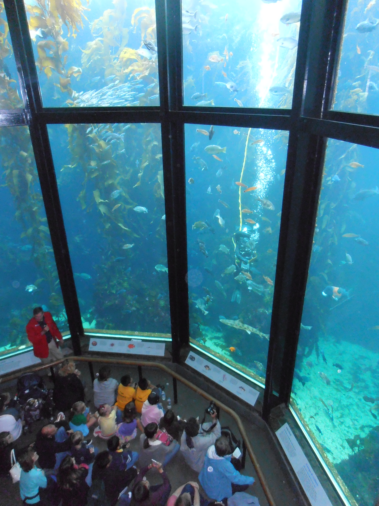

places i have visited

Disneyland Florida
I visited in 2018ish
A very good place to visit if you're in Florida (after quarantine ends). It has many rides for all ages, like stomach-turning ones or friendly ones. The restaurants are very good. I would definitely recommend visiting this place once Covid-19 is over.

San Diego Seaworld
I visited in 2017
San Diego Aquariam has many exhibits to visit and marvle at. There are sharks and dolphins, and flamingos. It also has restaurants and some rides. My favorite was, I believe it was called the Manta? A great place to visit.

St. Louis, Missouri
The drive to St. Louis from where I live was not far, compared how much I travel sometimes. I only really was in hotels and in the arch, but those places were great. They also had some great pizza and food.